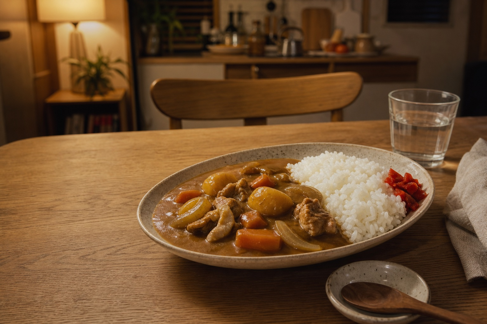

Japanese food · history · home cooking
Why Japanese Curry Tastes Different from Indian Curry
It shares an ancient spice story with India, yet the plate in a Japanese kitchen is unmistakably its own: thick, gently sweet, and built for a spoonful of rice.
10-minute cultural guide
Order curry in Japan and you may receive something unexpected. Instead of a spice-forward sauce with regional Indian roots, you are likely to see a glossy brown stew poured beside short-grain rice, with soft potatoes, carrots, onions, and meat tucked inside.
Japanese curry is not an imitation that simply became milder. It is the result of a long journey: from the many spiced dishes of the Indian subcontinent, through British colonial cooking and naval kitchens, into the school cafeterias and family homes of modern Japan.
01
The origin of curry
The journey began in India—but “curry” took shape in Britain.
The roots lie in the Indian subcontinent’s long, varied use of spices. During British colonial rule, British cooks and merchants turned many unfamiliar dishes into a more general category they called “curry.” Curry powders were blended for British kitchens, and recipes traveled home with officials, sailors, and trade.
This British version often used a standardized curry powder and flour-thickened sauce. That matters because Japan did not first encounter curry as a direct copy of one Indian regional dish. It largely met curry after it had already been adapted to British tastes and cooking systems.
02
How curry came to Japan
Japan received curry as Western food.
In the early Meiji era, beginning in 1868, Japan was rapidly adopting Western institutions and technology. The new Imperial Japanese Navy modeled important parts of its organization on Britain’s Royal Navy—and British-style curry came with that influence.
Curry suited a ship’s galley: it was flavorful, practical to cook in large quantities, and could combine meat and vegetables in one filling meal. Japan’s Ministry of Agriculture, Forestry and Fisheries notes that naval curry was also adopted during efforts to improve sailors’ diets at a time when beriberi was a serious problem.
On land, curry joined the category of yōshoku: Western-derived dishes reshaped for Japanese diners. Served with rice rather than bread, it gradually moved from military and restaurant cooking into cafeterias, schools, and the everyday home.
03
Why Japanese curry is different
One family name, very different personalities.
Japanese curry evolved around a thick roux, familiar vegetables, and the comforting rhythm of rice and sauce in every spoonful.
| On the plate | Japanese curry rice | Many Indian curry traditions |
|---|---|---|
| Thickener | Often a flour-and-fat curry roux | May rely on onions, tomato, yogurt, nuts, lentils, or reduction; flour roux is not the default |
| Texture | Glossy, cohesive, and stew-like | Ranges from dry to thin, creamy, chunky, or richly reduced |
| Common home ingredients | Potatoes, carrots, onions, and beef or pork | Varies enormously by region, religion, season, and household |
| Flavor profile | Usually savory, rounded, and mildly sweet | May be hot, tangy, aromatic, earthy, sweet, or layered in many combinations |
| Spice method | Convenient premixed roux blocks are common | Whole and ground spices are often combined at different stages |
Indian cooking cannot be reduced to one column; these are broad contrasts intended to explain Japanese curry rice, not rules for every dish.
05
Vermont Curry · since 1963
Japan’s childhood favorite was designed for the whole family.
When House Foods launched Vermont Curry in 1963, spicy curry was still widely thought of as grown-up food. The company’s idea was simple: create a curry that children and adults could enjoy from the same pot.
Apples and honey gave the roux a mellow sweetness while preserving the aroma and color people expected from curry. The product became a hit and helped define the warm, mild flavor many Japanese people remember from childhood dinners.
Not restaurant curry. Not a challenge for the palate. The taste of everyone gathering around one family pot.
Why beginners like it
- Mild, rounded flavor
- Apple and honey sweetness
- Easy solid roux blocks
- Made for meat and vegetables
- Comforting with short-grain rice
Vermont Curry is a House Foods brand. No product packaging or Amazon imagery is reproduced here.
Bring the story to your kitchen
Start with the curry generations grew up eating.
If you want to experience the same style of curry that millions of Japanese families grew up eating, House Vermont Curry is one of the best places to start. The mild version is especially welcoming if you are new to Japanese curry: simmer meat, onions, carrots, and potatoes, then dissolve the roux according to the package directions.
Find House Vermont Curry on Amazon.comAs an Amazon Associate I earn from qualifying purchases. Price and availability may change; check the Amazon listing for current ingredients, allergen information, package size, and preparation directions.
Primary and official sources
- Japan’s Ministry of Agriculture, Forestry and Fisheries: Yokosuka navy curry
- MAFF: naval diet reform and curry in the Meiji era (Japanese)
- Japan Maritime Self-Defense Force: the history of naval curry (Japanese)
- House Foods Group: Vermont Curry history
Historical accounts of curry’s arrival in Japan include multiple theories. This guide follows the well-documented British naval route while describing it as a major pathway, not the only possible encounter.